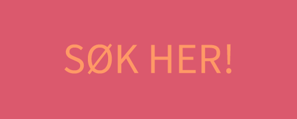
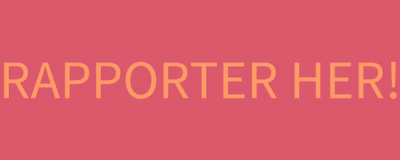

1. SØK
Vil dokker smella saman ein kjekk bowlingkveld med eit glas Mozell attåt? Dra på konsert saman for å knyta band og digga til norsk musikk på dialekt? Laga den stiligaste juleavslutninga nokon sinne? Me deler ut flust med pengar til aktivitet i lokallaga, og desse pengane kan gjera draumane dokker til røynd!

Kvart år får Norsk målungdom rundt 350 000 kr i Frifondmiddel frå LNU (Landsrådet for Noregs barne- og ungdomsorganisasjonar), og desse midla skal delast ut til lokallag som vil finna på sprell gjennom året. Dette kan for eksempel vera pizza til medlemsmøte, popkorn og kino, tacokveld, bannermaling og vaffelstand; eller noko heilt anna!
Dokker kan søka om pengar i to kategoriar:
Prosjektmiddel (støtte til konkrete tiltak og tilskipingar. Det er ikkje nokon øvre grense for kor mykje pengar ein kan søka i prosjektmiddel i året.)
Driftsmiddel (tilskot til kontormateriell, papir og ymse andre utgifter som ikkje er prosjekt. Ein kan søka opptil 5000 kroner i året i driftsmiddel.)
Søknadsfristen er 1. desember, og me opnar for søknadar frå 15. januar. Søknadar blir fortløpande behandla av sentralstyret.
2. RAPPORTER
Dokker har fått innvilga søknaden og pengane er på konto; kva nå?
Gratulerer med pengar på konto! Forhåpentlegvis blir det eit strålande prosjekt, pengane blir brukt opp og dokker sender inn ein rapport om pengane innan 1. oktober året etter søknaden er innvilga.

Me brukte ikkje opp pengane me fekk til prosjektet
Om dokker ikkje rekk å bruka opp pengane innan 1. oktober året etter søknaden er innvilga, må dokker anten
- omdisponera pengane til eit nytt prosjekt
- eller betala dei tilbake.
Me vil helst at dokker finn på noko anna kjekt og omdisponerer dei resterande pengane. Då må dokker senda ein kort e-post til kontor@malungdom.no om kor mykje pengar dokker har igjen og kva dokker ynsker å bruka dei til. Om dokker ikkje har moglegheit til å finna på noko anna og vil betala tilbake pengane som er igjen, sett dokker dei inn på kontonr. 3450.65.48642.
Me brukte meir pengar enn me fekk til prosjektet
Om dokker brukte meir pengar enn dokker fekk til prosjektet, kan dokker søka om å få meir pengar til prosjektet i etterkant. Berre fyll inn opplysingar om kor mykje meir dokker brukte under feltet “Brukte meir pengar enn me fekk innvilga” i rapportskjemaet om prosjektet.